分开就是分开，别让自己回头的理由
情境：咪咪爆料何韩脚踩两条船，展翘说：我绝不会回去跟谁抢。
遇到这种情况，可以这样做
- 成年人的体面，是不回头、不纠缠、不解释。
- 前任的事，少看一眼，多走一步。
- 把争抢的力气，留给值得的人。

Drama Recap · 剧情图文总结
第 7 集 · 母亲的房子
周媚爸爸和外面的女人要卖掉她妈妈住的房子分钱，贝文祺带着律师的身份进了这栋楼；妈妈却当众发现女儿偷偷涂了指甲油。孤烟为避嫌让三妹以后不再来，展翘劝他「哪有不让自己女朋友进房间的」。何韩《六周》复更在即，志远投资的钱也终于到账——房子、爱情、事业，人人都想守住自己那点地盘
「房子我不想卖。」周媚妈妈一句话，把全家都顶了回去。可就是这个一句话守住底气的妈妈，转头当众揭开女儿的指甲油：「告诉我，你是不是偷偷在脚上涂了？」——有人守房子，有人守规矩，有人守住自己。
第 7 集，展翘一早交代：今天的更新先完成，瓜洲的事晚一点再说。何韩与她在公司同进同出，被同事提醒「让老板看到我们这样不太好」。掌珠打来电话笑她撞见了孤烟的女朋友，另一边咪咪直播爆料何韩脚踩两条船——展翘只回一句：我从不屑于回头跟谁抢。
剧里的鸡毛蒜皮，往往是人生的缩影。这些情节不只是故事——当你在现实中遇到同样的处境时，它们能提醒你：先做什么、别做什么、怎么说才有效。
情境：咪咪爆料何韩脚踩两条船，展翘说：我绝不会回去跟谁抢。
情境：范叔明里暗里示好，展翘一句话把边界钉死。
情境：孤烟每晚打游戏照顾老兄弟，耽误了写稿。
情境：凌奕凯靠身边的女人拉七百万投资。
情境：房子是妈妈唯一的依仗，她咬住不放。
情境：妈妈检查女儿的指甲油，不许她打扮，理由是「怕她被带坏」。
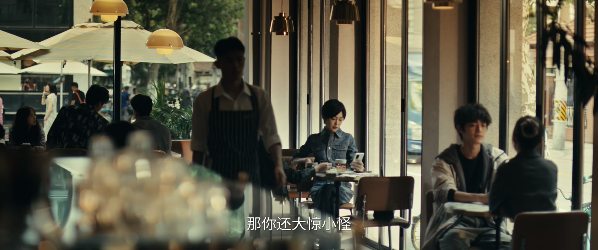
展翘一早交代作者：今天的更新先完成，瓜洲的事晚一点再处理。何韩和她在公司里同进同出，被同事提醒「让老板看到我们这样不太好」——她答：「我们这样不是很正常吗。」
掌珠打来电话打趣：你知道孤烟有女朋友吧？我撞见的那一下，可真够尴尬的。另一边，咪咪直播爆料何韩脚踩两条船。展翘只表态：「我明明已经分手了，还会跑回去跟咪咪这样的女人争抢何韩？我自己都不相信。」
关键台词 · KEY QUOTES
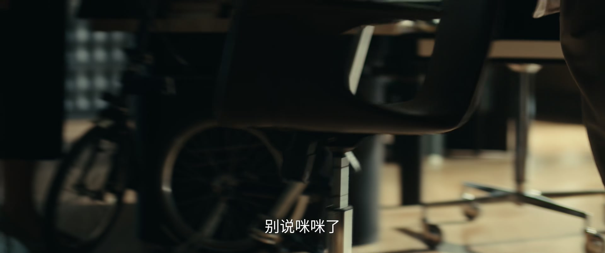
咪咪的《真爱生命 远离渣男》连载成了圈里的笑谈。范叔来找展翘，一边打趣「你别看我平时喜欢跟年轻姑娘聊天，其实我是看脑子的」，一边被展翘一句话堵回去：「我对谈恋爱没兴趣，我只要你的稿子。」
范叔转身敲打身边人：「编辑和作者之间不需要情感关系，否则对待作品还怎么客观？」他更放话：何韩要和谁好都行，离他的前妻戴珊远一点。何韩《六周》复更的日子定了，展翘怕大改情节损失读者，吩咐把后面的文字资料分给何韩和孤烟。
关键台词 · KEY QUOTES
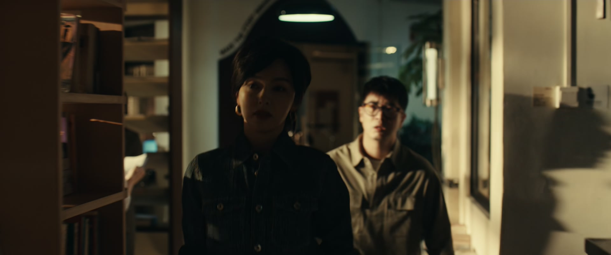
何韩《六周》复更在即，展翘不想在这个节骨眼上调整情节、损失读者。她安排人去准备后面的文字资料，一份给何韩，一份给孤烟——两个人接下来的仗，都要打。
单独相处时，展翘为之前的误会道歉：「不好意思，是我误会你了。」何韩没有接话，只说掌珠的事他会留意，最后撂下一句：「明天我去找你一趟，明天见。」
关键台词 · KEY QUOTES
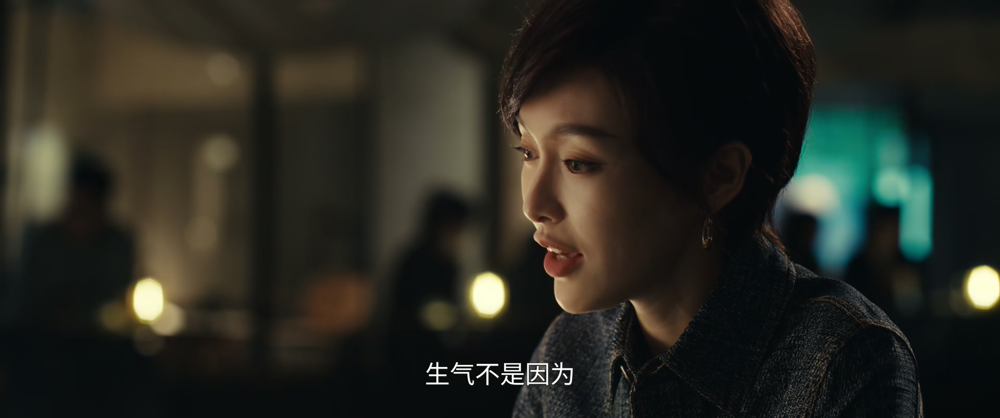
展翘一来，孤烟先道歉：「我已经跟三妹说了，她以后不再来了。我不应该让你觉得有什么顾忌。」展翘让他把话说清楚，他反反复复说不出口，展翘笑了：「哪有不让自己女朋友进房间的事情啊？」
她真正气的不是三妹在不在，而是他每晚都在打游戏：「白天你要写稿，根本没有时间睡觉。」孤烟解释：以前兄弟们是靠打游戏挣钱的，我不能因为自己现在能靠写网文赚钱，就不管他们了。
关键台词 · KEY QUOTES
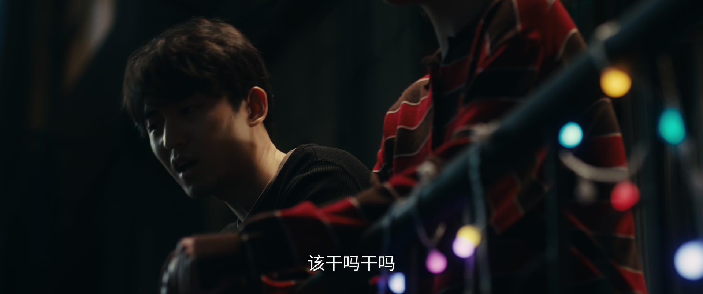
网吧里，兄弟们替孤烟操心：「咱这是地下，人家那是地上，完全两个世界。他上去兜一圈，回来跟咱们吹个牛，那就够了。」也有人说林展翘不过是拿他挣钱，「到时候一还，不还是回来当小网管」。
周媚、贝文祺、张佑森也在场。有人向周媚要微信，被起哄「人家贝律师同意吗」。散场时，贝文祺约周媚：「如果明天上午你也有时间的话，我们约上你的母亲一起见一下——先了解她现在所住房子的产权情况。」
关键台词 · KEY QUOTES
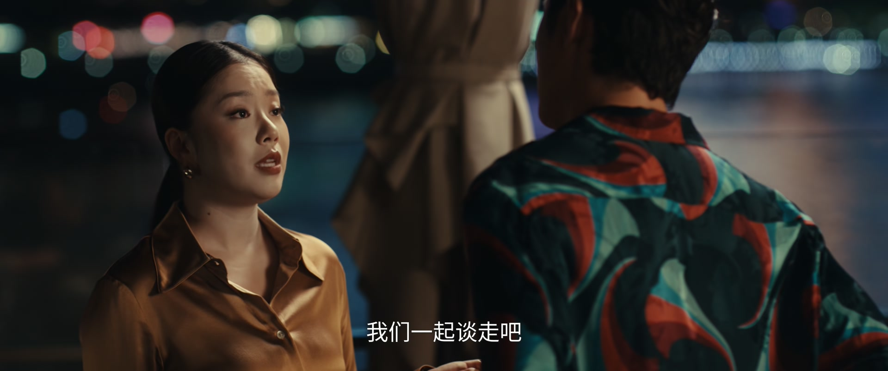
酒吧里，凌奕凯灌下一杯酒：「志远投资的钱已经给茞星了，我们一分钱都没拿着。」他盯着身边的年轻女人，半真半假地谈起了「资源互换」：「如果妞能带来投资，我为什么不好？」
女人冷冷回他：「你做到，我就陪在你身边；你做不到，才来找我谈感情。」凌奕凯追一句：「你说她一个月能找来多少钱？」「七百万。」「我给你找，一个月。」两人拍照立约，为七百万碰杯。
关键台词 · KEY QUOTES
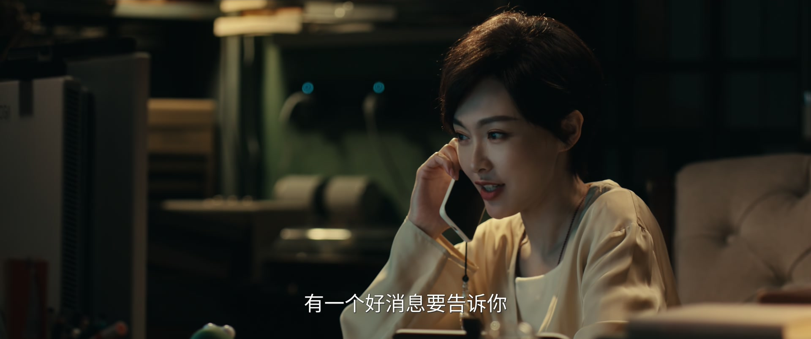
深夜，展翘打电话给何韩报喜：「志远投资的钱我应该是可以拿到了，这下也算是解了燃眉之急了。」她说自己在公司天天装得胸有成竹，其实心里清楚，已经快要砸锅卖铁了。
她又说起明天的事：要去看妈妈，还要和贝律师去看爸爸现在住的房子，跟他怎么聊——实在不行，就用法律途径解决。何韩在电话那头叮嘱她早点休息。
关键台词 · KEY QUOTES
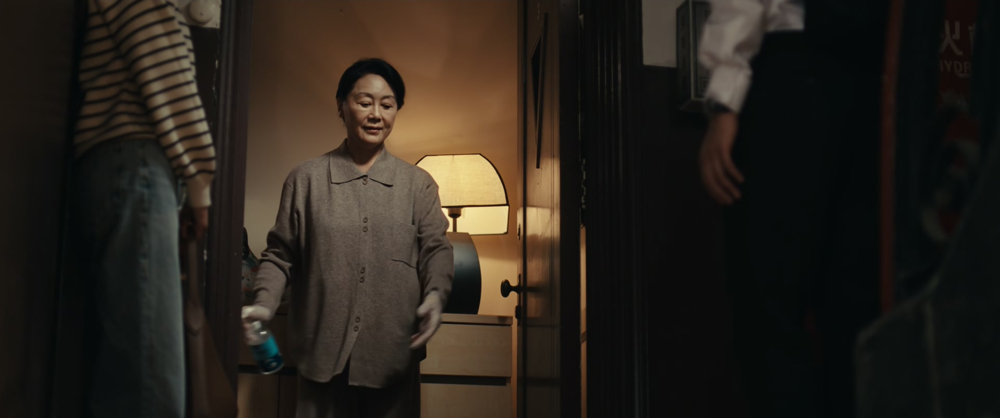
张佑森凑过来打趣：「你突然这么严肃，我和张佑森……哦不，是我们都有一点不太习惯。为什么你要打扮成这样去见阿姨啊？」展翘没接话，只把明天要说的话在心里又默默过了一遍。
展翘解释：妈妈这辈子最讨厌妖艳的女人，所以自己绝不能让她知道自己穿高跟鞋、涂口红、做发型。「从小她就不让我穿裙子和皮鞋，长大以后我赚的钱，都用来买衣服和化妆品——算是一种叛逆吧。」「那如果被她知道了呢？」「会疯。」贝文祺在一旁接话：「看来我们今天的法律咨询，是有点难度了。」
关键台词 · KEY QUOTES
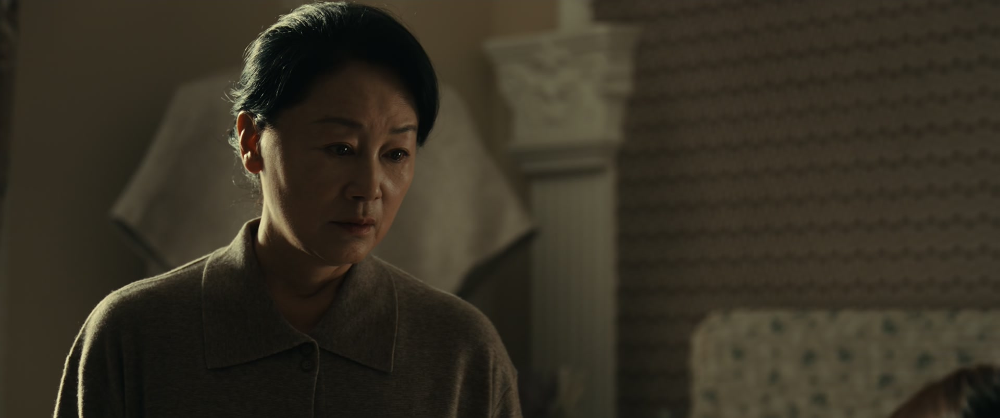
妈妈家，贝文祺先开口：「一家人，能不打官司就不打官司，让外人知道了也不好。」展翘淡淡补一句：「我爸都跟您离婚十几年了，不是一家人。」
贝文祺转述周媚带来的情况：她父亲想卖掉这栋房子，跟您平分卖房所得。妈妈寸步不让：「房子我不想卖。外面的女人跟她要钱，她就打这个房子的主意。」她请贝律师出面，让那个女人看清楚：破坏别人的婚姻、贪图别人的财产，是很不道德的行为。
关键台词 · KEY QUOTES
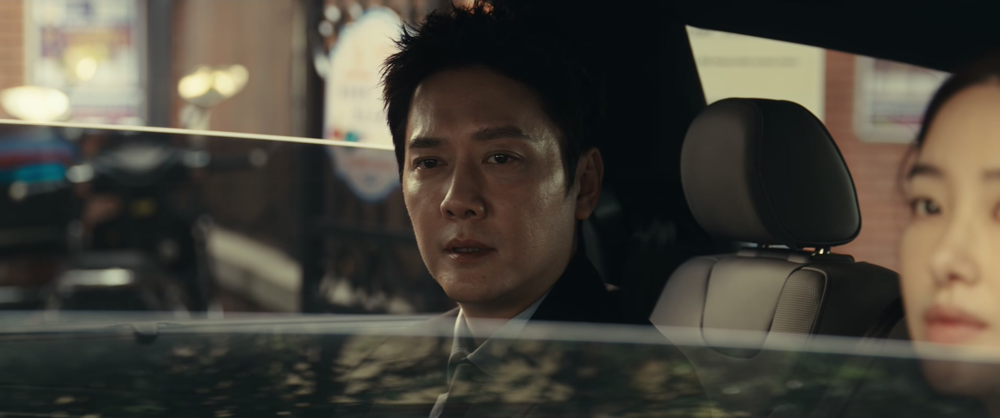
谈完正事，妈妈的目光落在女儿手上：「你都涂指甲油了。」展翘辩解说同事拿她试色，妈妈不听：「一个有教养的女孩子，不应该把精力都放在这方面，那对男人是一种诱惑，甚至可以说是一种勾引。」
妈妈越说越急，甚至要检查她的脚：「告诉我，你是不是偷偷在脚上涂了？是你脱，还是我给你脱？」贝文祺适时开口：「还是请你们先出去一下。」把这场争执拦在了别人面前。
关键台词 · KEY QUOTES
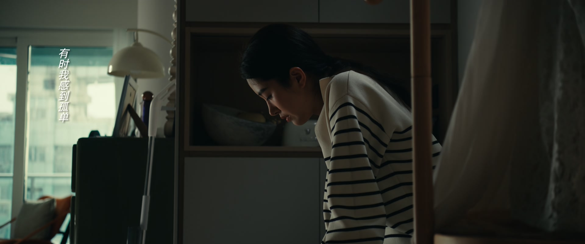
贝文祺送周媚上车。他说：「我是个律师，你要相信我，我见过各种奇葩的当事人。这种事情不应该发生在你身上。」顿了顿，他又说：「这样的成长环境，你还能长成我们现在认识的周媚，真是了不起。」
周媚沉默。她想起妈妈是学霸，爸爸当年说爱她的「腹有诗书气自华」，离婚时却说她「没有生活情趣」。她在心里想：那个阿姨的房子，哪里哪里都好看。我恨她抢走了我爸，让我和我妈这么痛苦难堪——可是同时，我又好喜欢她的衣服、她的手势，甚至是房子里面的香味。
关键台词 · KEY QUOTES
为孤烟赶走三妹的事劝他「哪有不让自己女朋友进房间的」；为之前误会向何韩道歉；深夜报喜志远投资到账，又和贝律师张罗起周媚家的房子。
《六周》复更在即；被范叔敲打「离戴珊远一点」；深夜听展翘报喜，又问她妈妈和贝律师的事。
为避嫌让女朋友三妹不再来工作间，又放不下靠他挣钱的老兄弟们；夜里打游戏到天亮，被展翘撞个正着。
爸爸和外面的女人要卖掉妈妈住的房子，她请贝文祺出面；妈妈当众揭她涂指甲油，她在恨阿姨与羡慕阿姨之间反复煎熬。
为周媚家的房子奔波，劝「一家人能不打官司就不打官司」；送周媚上车时，一句「你还能长成现在的周媚，真是了不起」令人动容。
一路陪同看房，打趣展翘「打扮成这样去见阿姨」，也把气氛从严肃里捞回来。
志远投资的钱被茞星拿走，他在酒吧拉着能带七百万投资的女伴谈「资源互换」，拍照立约。
范叔明里暗里示好，展翘一句「我对谈恋爱没兴趣，我只要你的稿子」把边界钉死。
孤烟为避嫌赶走三妹，展翘反而劝他——她气的是他熬夜打游戏，不是三妹。
「房子我不想卖。」周媚妈妈一句话守住全家的底气，也把爸爸和外面的女人顶了回去。
妈妈当众揭开女儿涂了指甲油，甚至要她当众脱掉——一场以爱为名的控制，刺得人心疼。
贝文祺送周媚上车：这样的成长环境，你还能长成我们现在认识的周媚，真是了不起。
「你说她一个月能找来多少钱？——七百万。」酒吧里的资源互换，暗流涌动。
何韩《六周》复更在即，孤烟的瓜洲线路三天限期——两个人正面交锋的时刻，越来越近。
凌奕凯靠「资源互换」拉投资，拍下的那张照、喝下的那杯酒，迟早要还。
房子没卖成，爸爸和外面的女人不会善罢甘休——这场家事，才刚刚开场。
何韩那句「贝律师知道你在你妈妈面前是什么样子吗」，把两个男人悄悄放上了天平。